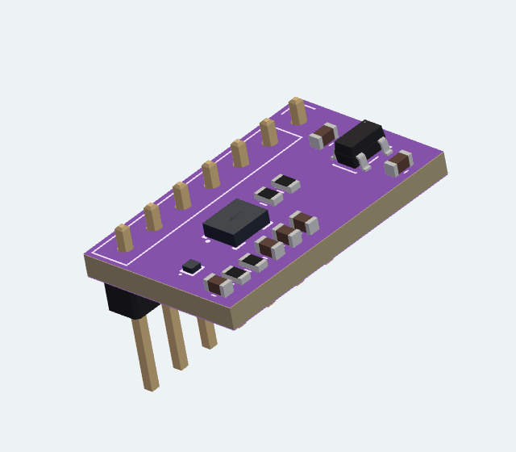

Arduinov0.2.1
Arduino AVR · Wire
İvme ve açısal hız örnekleri ZIP indir9 eksenli ataletsel ve manyetik sensör modülü
Robotik, gömülü veri toplama ve hareket kaydı için ivme, açısal hız ve manyetik alan ölçümlerini tek kartta bir araya getirir.

Ölçüm aralıkları sensör entegrelerinin tam ölçek değerleridir. Pin dizilimi, elektriksel bağlantı ve entegrasyon bilgileri veri sayfasında yer alır.
Elektriksel bağlantılar ve ölçüm özellikleri için veri sayfasını, yazılım entegrasyonu için platform paketinizi kullanın.
PDF · Türkçe ve İngilizce · Rev C
I²C başlangıç örnekleri ivme ve açısal hız okumaya yöneliktir. Manyetik ölçüm ve eşzamanlı dokuz eksen çıkışı kart düzeyinde doğrulama aşamasındadır.
Arduino AVR · Wire
İvme ve açısal hız örnekleri ZIP indirTeensyduino 4.x · Arduino/Wire tabanlı
Entegrasyon önizlemesi ZIP indirESP32 Arduino core · I²C örneği
Entegrasyon önizlemesi ZIP indirSTM32Cube HAL · 6 eksen sürücüsü
Entegrasyon önizlemesi STM32duino paketi ZIP indir